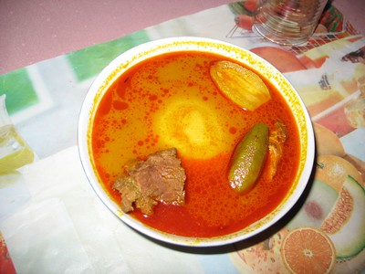
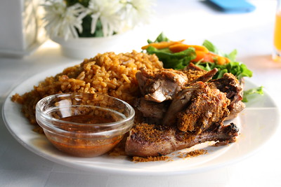
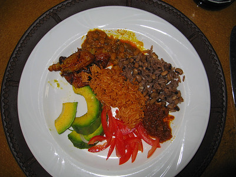

Ghanaian food is diverse. It is a product of its climate, its history and its people. Simply put,Ghanaian food consists of a lot of spicy soups and stews mostly made with tomatoes, onions, pepper, ginger and a variety of indigenous spices. I love Ghanaian food because it reminds me of home.
Pictures of Ghanaian Food

 